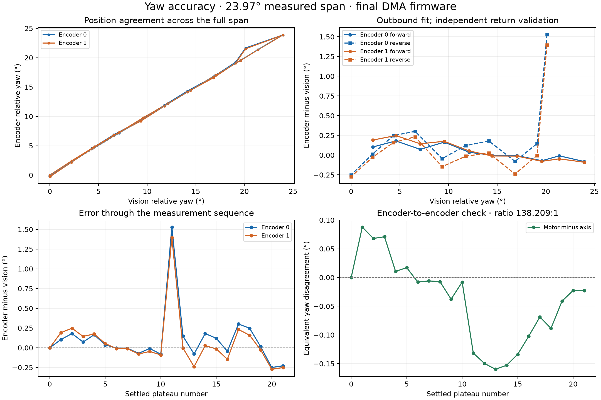

17 September 2026 — board 90:70:69:1C:48:54, CAN ID 78
Encoder 1 now counts reliably in the tested movements on the actual board. The repaired firmware remains installed. It acquired 10,761,728 motor A/B pairs during the out-and-back experiment, with zero DMA overflows, read errors, channel-order errors, or invalid quadrature transitions. Encoder 0 also had zero invalid transitions and zero ADC read failures during the experiment.
The outbound sweep covered 23.954°, from a settled camera yaw of 23.168° to 47.122°, followed by a return to 23.175°. There were 10 outbound and 10 return plateaus, plus initial and final stationary readings. Motion was principally 60% duty in two-second, board-timed increments, with five seconds for settling after each increment. Two outbound stages were interrupted by an overly strict camera check requiring valid pitch as well as yaw; they resumed from the same positions without resetting either encoder. The collector now requires only fresh, valid yaw.
For each plateau, the last two seconds supplied the median encoder count and the mean of 4–5 unique camera yaw readings. The camera logs at roughly 0.53-second intervals. Counts were stationary in every return measurement window. Each degrees-per-tick scale was fitted only to outbound data, with a common initial zero and no fitted offset. Return data were held out for validation.
| Measurement | Encoder 0, GPIO11/12 | Encoder 1, GPIO9/10 |
|---|---|---|
| Calibration | 32.8834 ticks/° | 4,544.8967 ticks/° |
| Degrees per tick | 0.03041048° | 0.000220027° |
| Outbound fit RMS error | 0.094° | 0.130° |
| Return RMS error, all 10 points | 0.513° | 0.467° |
| Return maximum absolute error, all points | 1.529° | 1.396° |
| Return RMS error, 8 stable-reference points¹ | 0.169° | 0.161° |
| Return maximum absolute error, stable-reference points¹ | 0.301° | 0.273° |
| Return-to-start error versus vision | −0.250° | −0.273° |
¹ This is a post-analysis, quality-screened comparison, not a replacement for the all-points result. The screen requires camera yaw standard deviation ≤0.1° in the measurement window and encoder count ranges ≤1 tick. It excludes reverse_01 and reverse_08, whose camera standard deviations were 1.975° and 0.320°. Both encoders were stationary at those points. Typical camera plateau standard deviation was 0.015°.
At reverse_01, camera yaw jumped from 44.864° to 40.096° in 0.518 seconds, then began returning, while both encoder positions remained unchanged. That is strong evidence of a reference problem, not proof of a 4.8° encoder error. The CSV does not include tracking-quality flags or an independent angle reference, so this report retains the affected measurements in its primary result rather than assuming them away.
Interpretation: the two encoders show similar agreement with a stable camera reference—roughly 0.17° RMS in this experiment. Encoder 1 has much finer count resolution, but this experiment does not establish correspondingly finer absolute pointing accuracy. Camera errors, direction-dependent mechanics, and encoder phase/threshold effects remain part of the measured discrepancies. The calibration covers this yaw region and the tested firmware, not a full revolution or a temperature/speed/load study.

Fitting outbound encoder 1 counts against encoder 0 counts gives 138.209 motor ticks per axis tick. This is an empirical count conversion, not a verified mechanical gear ratio or confirmed connector mapping.
On the independent return sweep, their disagreement, expressed in yaw degrees, was:
Both tracked the full motion and reversal. The direction-dependent difference means they are not interchangeable to arbitrary precision; gearbox backlash/compliance and decoder phase effects are possible contributors, not established diagnoses.
On returning, encoder 0 changed by −8 ticks, encoder 1 by −1,208 ticks, and vision by +0.00694° relative to the initial reference. Those produce the −0.250° and −0.273° return errors above. After another ten stationary seconds, neither encoder moved; the camera changed by another −0.022°.
The earlier suggestion that encoder 1 was saturating more was misleading: both pairs clipped heavily, and in the earlier 60% buffered capture encoder 0 actually had more samples with at least one clipped channel (about 72% versus 63%). Identical supplies/connectors do not make the two signal frequencies the same, and clipping alone did not explain the difference in behavior.
The useful findings were:
The final firmware uses:
This required firmware changes only; no wiring, power supply, sensor, or connector was changed. A clipped ADC result does not by itself identify the input voltage or establish electrical overvoltage.
git diff --check passed.ENCODER STATS exposes DMA overflows, acquisition errors, malformed channel order, and invalid transitions so future data loss can be detected.The repaired DMA firmware is installed; the original image was not restored this time. The motor was left stopped. The original flash backup from the earlier investigation remains available locally as yaw-original-flash.bin.
The tested application image SHA-256 is:
c6c574711aa5a1f2de794c4ef2716611ca15c25ca3922472670d538f86a36310
Reconnect the yaw board in the web client. Expand “Yaw degree readouts · encoders 0 and 1”, stop the motor, and click “Set both yaw zeros here.” The client now queries the actual inversion settings and displays both relative angles with the new scales. This panel is opt-in and applies to the yaw board, not pitch. The client builds successfully; its final physical BLE interaction was not browser-tested in this session.
For other software, with the installed default inversion settings:
yaw_from_encoder0 = reference_yaw + (position0 - reference_position0) × 0.03041048252
yaw_from_encoder1 = reference_yaw + (position1 - reference_position1) × 0.0002200270028
Take both reference positions while stationary. Re-zero after reboot or reconnection; account for sign if inversion settings are changed. These new-firmware factors supersede the earlier original-image calibration.
From the repository root:
local_tools/.venv/bin/python local_tools/calibration/analyze_dma_sweep.py
uv run --quiet --no-project --with matplotlib --with numpy python local_tools/calibration/plot_dma_sweep.py
cc -std=c11 -Wall -Wextra -Werror -I main/include local_tools/calibration/test_encoder_schmitt.c -o /tmp/test-yaw-schmitt
/tmp/test-yaw-schmitt
The collector refuses to overwrite the experiment file. Re-running motor measurements requires fresh camera yaw and a new output filename. Both host cleanup and the board's independent timed motor stop are used.